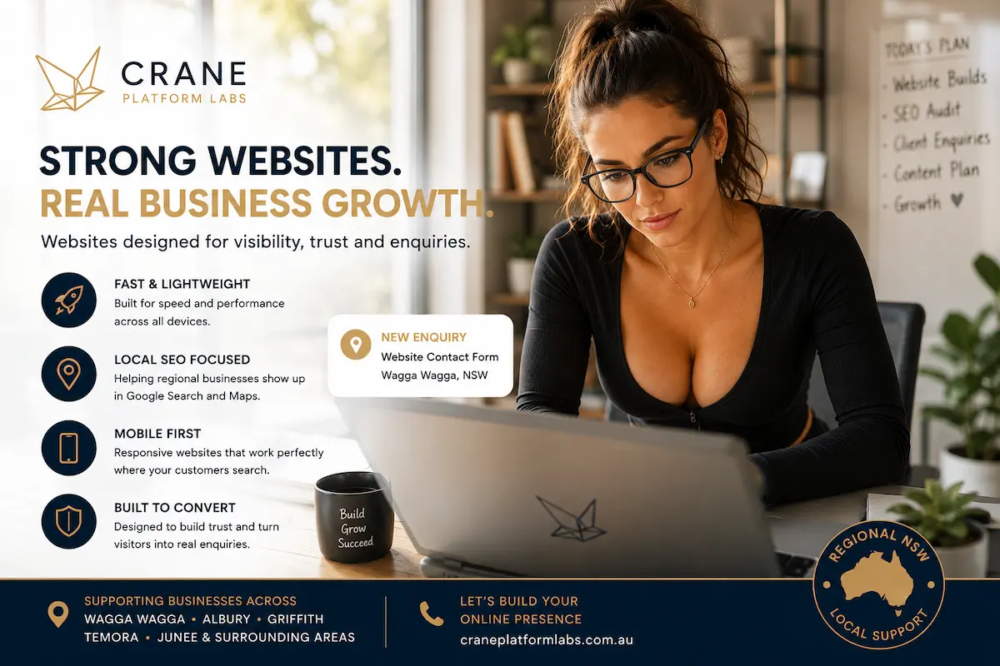

Faster Initial Setup
Website builders can help businesses quickly launch a basic website using templates and simplified editing tools.
BUSINESS WEBSITE QUALITY
Many businesses start with a website builder or DIY website platform — however long-term Google visibility, accessibility, mobile usability, website performance and customer enquiries often depend on how well a business website is actually built.
Modern business websites need to do far more than simply look professional. They need to load quickly, work properly across phones and tablets, support accessibility standards and help customers discover businesses through Google Search and Google Maps.
While website builders can be a useful starting point for startups and small businesses, many eventually discover that slower loading speeds, weak SEO structure and generic templates can limit long-term online visibility and customer enquiries.
Crane Platform Labs builds lightweight, SEO-focused and mobile-friendly business websites designed around website performance, accessibility, semantic structure and modern web best practices for businesses across regional NSW.
From tradies and tourism operators to cafés and regional service businesses, we focus on building websites that support stronger Google visibility, mobile usability, accessibility compliance and real customer enquiry generation.
Supporting businesses across Wagga Wagga, Albury, Griffith, Temora, Junee and regional NSW


WEBSITE BUILDERS
Website builders can be a useful starting point for startups and small businesses wanting to quickly create an online presence without needing advanced technical knowledge or large upfront development costs.
Platforms such as Wix, Squarespace, Shopify and GoDaddy Website Builder have made it easier for businesses to create basic websites using templates, drag-and-drop tools and beginner-friendly editing systems designed for quick website setup.
For many regional NSW businesses, website builders can initially feel like the fastest and most affordable way to launch a business website, establish a digital presence and begin appearing online through Google Search and social media platforms.
Small businesses often begin focusing on convenience first — however over time, stronger Google visibility, mobile usability, accessibility, loading speed and generating consistent customer enquiries usually become far more important.
As businesses grow, many owners begin discovering that website performance, semantic structure, SEO foundations and modern web best practices can significantly influence how easily customers find and trust a business online.
While website builders can absolutely help businesses get started online, many eventually realise that long-term website quality often depends on how well a website supports accessibility, usability, search engine understanding, mobile performance and customer experience across modern devices.
This is particularly important for local businesses competing for visibility across Google Maps, regional search results and mobile search traffic throughout Wagga Wagga, Albury, Griffith, Temora and regional NSW.
Website builders can help businesses quickly launch a basic website using templates and simplified editing tools.
DIY website platforms are often appealing for startups and smaller businesses working within limited budgets initially.
Drag-and-drop systems can make it easier for businesses to update content without advanced technical experience.
As businesses grow, stronger SEO structure, accessibility, performance and mobile usability often become increasingly important.
Modern business websites should support website performance, accessibility, semantic structure, responsive mobile usability and long-term SEO foundations while helping businesses generate trust and real customer enquiries online.
WEBSITE PERFORMANCE
Many DIY business websites can initially look visually appealing — however long-term Google visibility, accessibility, mobile usability, website performance and customer enquiries often depend on much stronger website foundations behind the scenes.
Modern business websites are no longer judged only by visual appearance. Website performance, semantic structure, accessibility standards, mobile responsiveness and SEO foundations now play a major role in how businesses appear across Google Search, Google Maps and mobile search results.
Many businesses eventually discover that slower loading speeds, generic website templates, poor semantic structure and weak local SEO foundations can reduce long-term visibility, customer trust and website enquiry performance online.
This becomes particularly important for businesses competing locally across Wagga Wagga, Albury, Griffith, Temora and regional NSW where local search visibility, mobile traffic and customer trust strongly influence enquiry generation and business growth.
Google increasingly prioritises websites that support accessibility, responsive mobile usability, semantic structure, clean navigation and strong customer experience across modern devices and search environments.
Heavy templates, unnecessary scripts, oversized images and excessive animations can reduce loading speed, responsiveness and overall customer experience across mobile devices.
Poor semantic hierarchy, weak heading structure and generic layouts can limit how Google understands business websites, search intent and local relevance.
Most customers now browse business websites using phones, making responsive mobile usability and readable layouts essential for modern business websites.
Modern business websites should support semantic HTML, contrast standards, readable layouts and accessible navigation across multiple users and devices.
Generic templates can make it difficult for businesses to stand out locally, communicate trust or create stronger customer confidence online.
Many business websites struggle to appear consistently across Google Search and Google Maps due to weak SEO foundations, poor structure and limited local relevance signals.
Internal linking helps Google understand relationships between pages, improving topical authority, crawl understanding and long-term SEO performance.
Websites that are difficult to navigate, slow to load or poorly structured can reduce customer trust and negatively affect enquiries and conversions.
Modern business websites should support performance, accessibility, semantic structure, mobile usability, local SEO foundations and long-term customer trust while helping businesses generate real enquiries online.
Businesses across regional NSW increasingly rely on Google Search, Google Maps and mobile visibility to help customers discover services, compare businesses and make purchasing decisions online.
MODERN BUSINESS WEBSITES
Modern business websites should balance professional design with website performance, accessibility, mobile usability, semantic structure and strong SEO foundations designed for long-term Google visibility and customer enquiries.
Google increasingly prioritises websites that provide strong customer experience, responsive mobile usability, accessibility-focused layouts and fast loading performance across modern devices and search environments.
Clean semantic HTML, lightweight code, structured headings, responsive layouts and properly optimised images help improve loading speeds, accessibility compliance, mobile usability and long-term website reliability.
Strong internal linking, SEO-friendly page hierarchy and structured content help Google better understand business websites, search intent, topical relevance, local business relationships and semantic page structure.
Accessibility-focused design also plays an increasingly important role in helping websites function properly for more users while supporting modern web best practices, usability standards and long-term website quality.
Businesses competing locally across Wagga Wagga, Albury, Griffith, Temora, Junee and regional NSW increasingly rely on Google Search, Google Maps and mobile visibility to help customers discover services, compare businesses and generate enquiries online.
Website performance now directly influences customer trust, engagement, mobile usability, bounce rates, enquiry generation and how easily customers interact with businesses across phones, tablets and desktop devices.
Modern SEO is no longer based only on keywords. Search engines increasingly analyse semantic structure, accessibility, page experience, internal linking, content relationships and overall website usability when evaluating business websites.
At Crane Platform Labs, we focus on building lightweight, mobile-friendly and SEO-focused business websites designed around accessibility, semantic structure, website performance and long-term Google visibility for businesses across regional NSW.
Lightweight code, image optimisation and clean layouts help improve loading speed, responsiveness and overall customer experience across modern devices.
Semantic HTML, readable layouts, proper contrast and accessible navigation help websites support more users across multiple devices and browsing environments.
Structured headings, semantic hierarchy, internal linking and local SEO foundations help support stronger Google Search and Google Maps visibility.
Modern business websites should function properly across phones and tablets where most regional search traffic now occurs.
Proper page hierarchy and structured content help search engines better understand website topics, services, local intent and topical relationships.
Professional business websites help improve customer confidence, credibility, engagement and long-term enquiry generation online.
Internal linking helps search engines understand relationships between services, locations and business topics while strengthening topical authority.
Local SEO foundations help businesses improve visibility across Google Maps, regional searches and location-based mobile search traffic.
Modern business websites should support performance, accessibility, semantic structure, mobile usability and long-term SEO foundations while helping businesses build trust and generate real customer enquiries online.
Businesses across regional NSW increasingly depend on strong Google visibility, mobile usability and local search performance to compete effectively online and attract new customers.
REGIONAL NSW
Crane Platform Labs works with businesses across Wagga Wagga, Albury, Griffith, Temora, Junee and surrounding regional NSW areas — building lightweight, SEO-focused and mobile-friendly business websites designed for long-term Google visibility, accessibility and customer enquiries.
Regional businesses increasingly rely on Google Search, Google Maps and mobile visibility to help customers discover services, compare businesses and make purchasing decisions online.
Modern business websites should support accessibility, responsive mobile usability, semantic structure, website performance and strong local SEO foundations while helping businesses build trust and generate real customer enquiries online.
Businesses across regional NSW often compete directly against larger metro businesses, national website builders and heavily templated websites — making strong website structure, Google visibility, customer experience and local search relevance increasingly important.
Search engines increasingly analyse semantic structure, accessibility, internal linking, responsive usability, local relevance and overall website quality when evaluating modern business websites.
At Crane Platform Labs, we focus on building clean, lightweight and SEO-friendly business websites designed around accessibility, usability, semantic HTML and modern web best practices for businesses across regional NSW.
From tradies and tourism operators to cafés, accommodation providers and regional service businesses, we help businesses improve online visibility, strengthen customer trust and support long-term enquiry generation through better website structure and SEO foundations.
Strong SEO foundations, semantic structure and local relevance signals help businesses improve visibility across Google Search and Google Maps.
Responsive layouts help websites function properly across phones and tablets where most regional search traffic now occurs.
Lightweight code, optimised assets and clean layouts help improve loading speed, usability and customer experience across modern devices.
Semantic HTML, readable layouts, proper contrast and accessible navigation help websites support more users across multiple devices and environments.
Professional business websites help improve customer confidence, credibility, engagement and long-term enquiry generation online.
Local SEO foundations help businesses improve visibility across regional searches, Google Maps and location-based customer enquiries.
Structured content and semantic hierarchy help search engines better understand website topics, services and local business relevance.
Internal linking helps search engines understand relationships between services, locations and topics while strengthening topical authority.
Businesses across regional NSW increasingly depend on strong Google visibility, responsive mobile usability, accessibility and modern website quality to compete effectively online and attract new customers.
Modern SEO increasingly relies on semantic structure, accessibility, internal linking, usability, local relevance and overall customer experience rather than keywords alone.
GET STARTED
Fast, mobile-friendly and SEO-focused business websites built for regional NSW businesses wanting stronger Google visibility, better mobile usability and real customer enquiries online.
Modern business websites should support accessibility, responsive mobile usability, semantic structure, website performance and strong local SEO foundations while helping businesses build trust and improve long-term online visibility.
Crane Platform Labs builds lightweight, accessibility-focused and SEO-friendly websites for tradies, cafés, tourism operators, accommodation providers and regional service businesses across Wagga Wagga, Albury, Griffith, Temora, Junee and surrounding regional NSW areas.
From website performance and semantic HTML to Google visibility, local SEO and mobile-first usability, we focus on building business websites designed around modern web best practices and long-term customer enquiry generation.
Many businesses eventually begin looking beyond website builders after struggling with low Google visibility, weak customer enquiries, poor mobile usability or difficulty appearing consistently across Google Search and Google Maps.
Lightweight code and optimised assets help improve loading speed, usability and customer experience across modern devices.
Structured content, semantic hierarchy and local SEO foundations help support stronger Google Search and Google Maps visibility.
Semantic HTML, readable layouts and accessible navigation help websites support more users across multiple devices and environments.
Strong local SEO and Google visibility help businesses appear when customers search for services, locations and business categories online.
Modern search engines increasingly evaluate semantic structure, accessibility, usability, internal linking and overall website quality to better understand business websites and customer intent online.
Built for Google • Accessibility-focused • Mobile-friendly • Lightweight performance • Regional NSW support